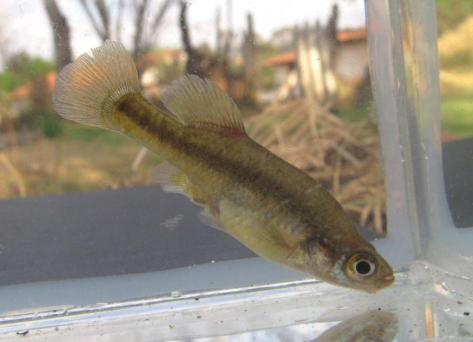

Systématique
- Ordre : Cyprinodontiformes
- Famille : Goodeidae
- Genre : Allophorus
- Espèce : A. robustus
- Auteur : Bean, 1892

Allophorus robustus est le géant de la famille des Goodeidae. Originaire du plateau central mexicain, il se distingue radicalement de ses cousins par sa taille et son écologie. C'est l'unique membre de son genre. Son corps est massif, allongé, avec une tête large et une fente buccale profonde, caractéristiques typiques d'un prédateur. La coloration est variable, allant de l'olivâtre au bronze, parsemée de taches sombres irrégulières sur le dos et les flancs.
Les femelles peuvent atteindre des dimensions exceptionnelles pour un vivipare, mesurant jusqu'à 20 à 23 cm. Les mâles sont plus petits mais restent imposants, atteignant souvent 15 à 18 cm. Contrairement à la majorité des Goodeids qui sont alguivores ou insectivores, cette espèce occupe le sommet de la chaîne alimentaire dans ses micro-habitats.
Allophorus robustus est un prédateur solitaire et opportuniste. En aquarium, son comportement est calme mais il reste aux aguets. En raison de sa taille et de son régime alimentaire, il est impératif de le maintenir en bac spécifique ou avec des poissons de taille similaire ; tout individu pouvant entrer dans sa bouche sera considéré comme une proie.
C'est une espèce qui nécessite un volume d'eau important pour s'épanouir. Elle apprécie les eaux fraîches et bien oxygénées. Malgré son aspect robuste, il est sensible aux mauvaises conditions d'hygiène et à l'accumulation de déchets organiques (nitrates), fréquents dans des bacs hébergeant de gros prédateurs. Un système de filtration surdimensionné est essentiel.
Mode : Vivipare matrotrophe.
La reproduction est similaire à celle des autres Goodeinae, mais à une échelle plus grande. La gestation est longue, pouvant durer de 60 à 75 jours. Les alevins sont nourris par la mère via des trophotaeniae très développées. Les portées sont proportionnelles à la taille de la femelle, variant généralement entre 20 et 60 jeunes, bien que des portées plus importantes aient été rapportées.
Les alevins à la naissance sont gigantesques, mesurant souvent entre 25 et 35 mm. Ils sont immédiatement capables de chasser de petits invertébrés ou des alevins d'autres espèces. Le cannibalisme parental est moins marqué que chez les petits Goodeids, mais la prédation entre jeunes de tailles différentes peut survenir.
Dimorphisme sexuel : Le mâle possède un andropode (modification structurale de la nageoire anale pour la fertilisation interne). Il est nettement plus petit et plus svelte que la femelle. La femelle mature présente un abdomen très profond et une masse corporelle bien plus importante.
Espérance de vie : Environ 5 à 8 ans. Sa longévité dépend du respect des températures fraîches et de la qualité de l'eau.
L'espèce peuple les lacs et les rivières à courant lent du bassin du Rio Lerma, notamment les lacs Pátzcuaro, Cuitzeo et Zirahuén au Mexique. On le trouve généralement dans les zones profondes où il peut chasser à l'affût, souvent près des herbiers aquatiques.
Le biotope est caractérisé par une eau neutre à alcaline, souvent turbide en milieu naturel. La température de l'eau peut varier de manière saisonnière, avec des hivers frais. Les populations naturelles sont en déclin en raison de la pollution, de la surpêche locale et surtout de l'introduction de prédateurs exotiques comme l'achigan à grande bouche.
Répartition

Origine naturelle :
- Mexique : Plateau central, bassin du Rio Lerma (Lacs Pátzcuaro, Cuitzeo, Zirahuén, Chapala).
- Localité type : Lac de Chapala, Mexique.
Statut UICN : En danger (Endangered). L'espèce disparaît de nombreuses localités historiques à cause de la dégradation environnementale sévère de la région du Lerma.
Paramètres de maintenance
Température : 16 à 22 °C (Éviter les températures tropicales constantes).
pH : 7,0 à 8,5.
GH : 10 à 25 °dGH.
Courant : Faible à modéré.
Volume conseillé : Minimum 400 à 500 L pour un couple ou un petit groupe, compte tenu de leur taille adulte.
Régime alimentaire
Régime : Carnivore prédateur (piscivore prédominant).
Dans la nature, il se nourrit principalement de petits poissons, de crustacés et de gros invertébrés aquatiques.
En aquarium, il doit être nourri avec des aliments carnés : poissons entiers congelés (éperlans), vers de terre, crevettes, chair de poisson et gros granulés pour carnivores. Il est important de ne pas le suralimenter pour éviter la pollution du bac.